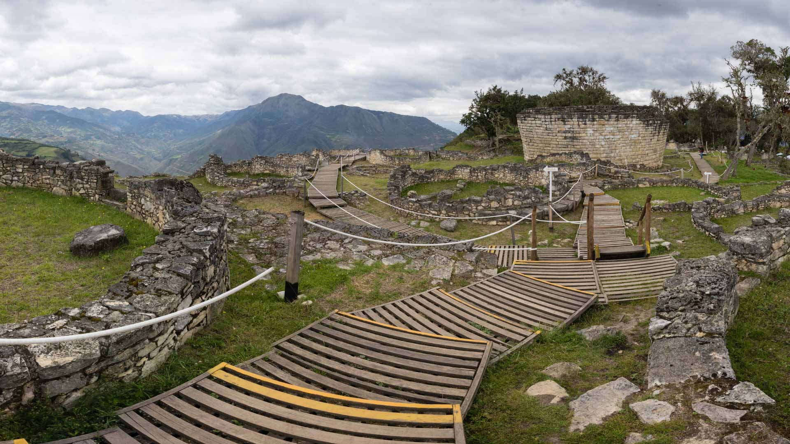
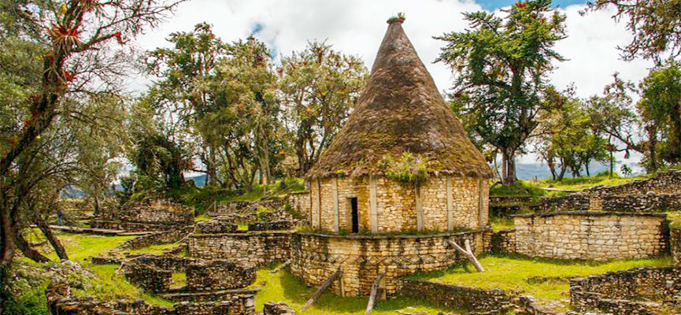
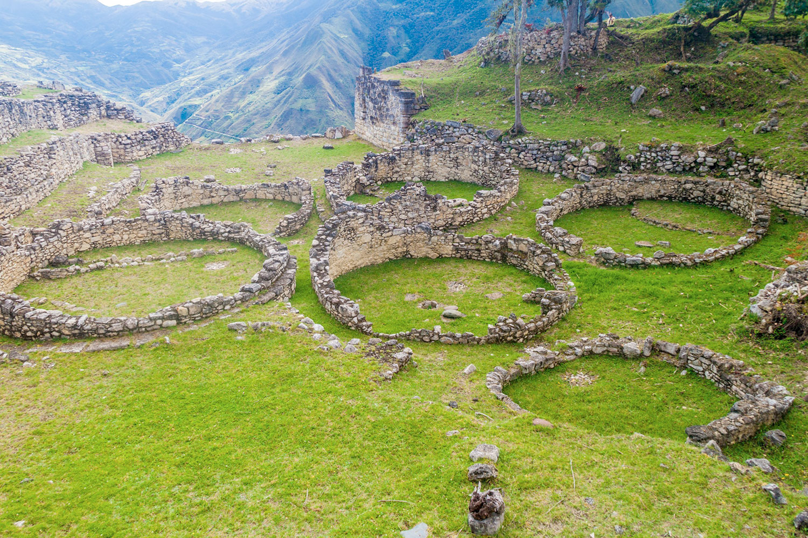

🏰 Fortaleza de Kuélap - El Machu Picchu del Norte 🌄
La Fortaleza

- Construida por la cultura Chachapoyas alrededor del siglo VI d.C.
- Ubicada a 3,000 msnm en la región Amazonas.
- Rodeada por murallas de hasta 20 metros de altura.
Arquitectura

- Más de 400 edificaciones circulares dentro de la fortaleza.
- Decoraciones en piedra con figuras geométricas y zoomorfas.
- Diseño defensivo y ceremonial de gran complejidad.
Cultura Chachapoyas

- Conocidos como los “Guerreros de las Nubes”.
- Pueblo que destacó por su arquitectura en piedra y su resistencia.
- Conexión cultural con otras civilizaciones andinas.
Turismo

- Actualmente es uno de los atractivos más importantes del norte peruano.
- Se accede por teleférico desde la localidad de Tingo.
- Forma parte de la Ruta del Amazonas junto a Gocta y Leymebamba.